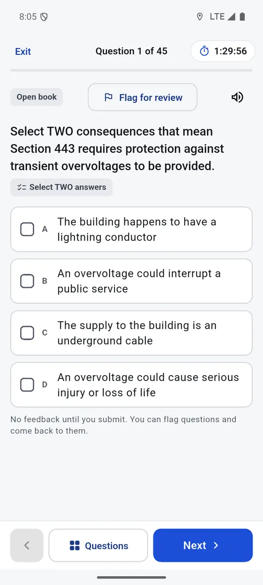
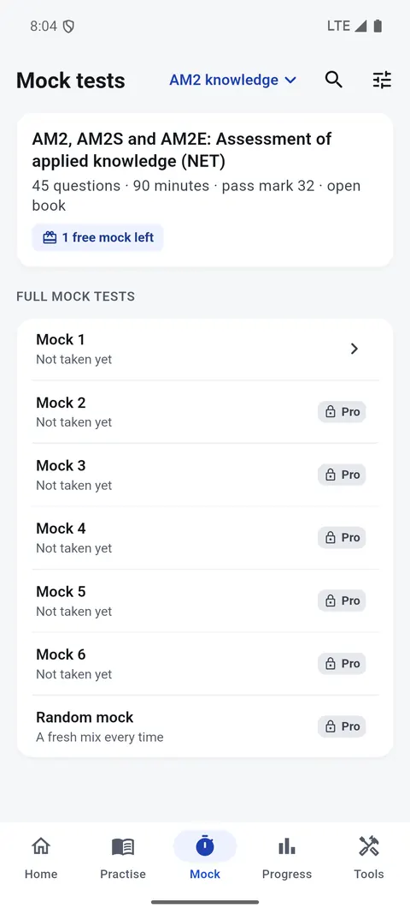
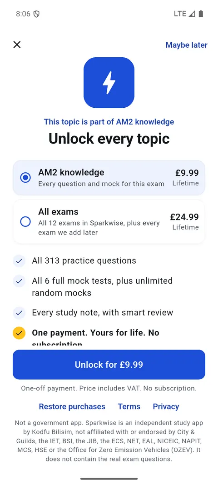

Not a government app. Sparkwise is an independent study app made by Kodfu Bilisim. It is not affiliated with or endorsed by the IET, BSI, City & Guilds, EAL, NET, the ECS, the JIB, NICEIC, NAPIT, MCS, HSE or OZEV. It does not contain the real exam questions and never reproduces BS 7671 text.
All exams › AM2 knowledge test
AM2 knowledge test questions (AM2, AM2S and AM2E Section E)
Section E of the AM2 is the only part you sit at a screen: an open-book multiple-choice test of applied knowledge. On AM2S v1 it is 45 questions in 1 hour 30 minutes; on the older AM2, AM2S and AM2E it is 30 questions in 1 hour. This page sets out the format and the areas it covers, then gives you 8 free practice questions with answers. Sparkwise has 313 questions and timed 45-question mocks.
Practise for the AM2: get Sparkwise on Google Play Try 8 free questions
Free in the app: 79 AM2 questions and one full mock. AM2 knowledge unlock: £9.99 once for all 313 questions and every mock. No subscription. Android now; iPhone version not yet available.
On this page
Section E format by version
The AM2 is NET’s end test of occupational competence for electricians. Most of it is practical: safe isolation and risk assessment, the composite installation, inspection and testing, and fault diagnosis. Section E, the assessment of applied knowledge, is the online multiple-choice part. Which version you sit depends on your route.
| Version | Who sits it | Section E |
|---|---|---|
| AM2 | Level 3 NVQ route (for example C&G 2357, EAL 1605) | 30 questions, 1 hour |
| AM2S | Installation and maintenance electrician apprentices who started before 09/2023 | 30 questions, 1 hour |
| AM2S v1 | Apprentices who started from 09/2023 | 45 questions, 1 hour 30 minutes |
| AM2E and AM2E v1 | Experienced workers finishing the EWA | 30 questions, 1 hour on the older AM2E; v1 is aligned with the revised standard, so expect the AM2S v1 format and check with NET |
Every version is open book. The centre supplies the current BS 7671, IET Guidance Note 3, the IET On-Site Guide and the IET Electrician’s Guide to the Building Regulations, and no other documents are allowed. There is reading time before you start. NET does not publish the pass mark: it says its marking criteria are confidential. Sources: NET’s AM2S v1 and AM2 pages and the pre-assessment manuals.
Sparkwise mocks use the longer AM2S v1 format, 45 questions in 90 minutes, and score them against 32 of 45 (about 70%). That pass mark is our own working figure, not NET’s. If you are on a 30-question version, every Sparkwise topic still applies.
What Section E covers
NET lists the areas for the AM2S v1 knowledge test: health and safety, BS 7671, the Building Regulations, inspection and testing, installation practices, fault diagnosis and rectification, design and planning, and behaviours such as customer service. The older 30-question test covers health and safety, BS 7671 and the Building Regulations. Sparkwise has a topic for each:
| Sparkwise topic | Questions in the app |
|---|---|
| Health and safety law and safe working | 34 |
| Safe isolation | 31 |
| BS 7671 requirements | 64 |
| Building Regulations | 36 |
| Inspection, testing and certification | 48 |
| Fault diagnosis and rectification | 27 |
| Installation practices | 31 |
| Design and planning | 28 |
| Behaviours and customer care | 14 |
Questions follow BS 7671:2018+A4:2026. 31 calculation questions, such as voltage drop and maximum R1+R2, have a step-by-step worked solution.

The real length, the real clock
The Sparkwise AM2 mock is 45 questions on a 90-minute timer, open book, with “Select TWO” questions, flags and a question navigator. At the end you see which areas cost you marks.
8 free AM2 knowledge test questions
One question from eight of the nine Sparkwise AM2 topics, with the answer and a short explanation. They are original questions written from BS 7671, the Building Regulations and public NET documents, not NET’s questions: no app or website can show you those.
Question 1 · Choose one answer
You are using a standard stepladder with no handhold at the top to fit a ceiling rose. Which is the safe way to work?
- Work side-on to the steps so you can reach a little further
- Close the steps and lean them against the wall like a ladder
- Keep off the top two steps and face the steps while working
- Stand on the top platform while a colleague holds the base
Show the answer
Answer C: Keep off the top two steps and face the steps while working
HSE advises staying off the top two steps unless there is a suitable handhold, facing the steps and not overreaching. A person footing a stepladder does not make standing on top safe.
Source: HSE INDG455 · stepladders
Question 2 · Choose one answer
How many tests are needed to prove a three-phase and neutral (TP&N) board dead on its outgoing side?
- 7
- 6
- 12
- 10
Show the answer
Answer D: 10
Three line-to-line tests, three line-to-neutral, three line-to-earth and one neutral-to-earth make ten.
Worked solution. Formula: line-line + line-N + line-E + N-E
- Line to line: L1-L2, L1-L3, L2-L3: 3 tests.
- Line to neutral and to earth: Each of three lines to N and to E: 3 + 3 = 6 tests.
- Neutral to earth: N-E: 1 test. Total 3 + 6 + 1 = 10.
Common mistake: Forgetting the neutral-to-earth test or the line-to-line pairs and stopping at 6 or 7.
Source: HSE GS38 · proving dead
Question 3 · Choose one answer
You rewire a bathroom. Every circuit has 30 mA RCD protection, disconnection times are met and all extraneous metalwork is connected to main bonding. Is supplementary bonding needed?
- Yes, every bathroom needs supplementary bonding
- Only for the shower circuit, not for lighting
- Only where the pipes in the room are copper
- No, it may be omitted when every condition is met
Show the answer
Answer D: No, it may be omitted when every condition is met
Section 701 lets supplementary bonding be omitted where all bathroom circuits have 30 mA RCDs, ADS times are met and extraneous parts are effectively connected to the main bonding.
Source: BS 7671 Reg 701.415.2
Question 4 · Choose one answer
A new extractor fan is going in a separate WC with no bath or shower. What minimum intermittent rate applies?
- 15 l/s
- 6 l/s
- 30 l/s
- 60 l/s
Show the answer
Answer B: 6 l/s
Sanitary accommodation needs at least 6 l/s intermittent extract, or purge ventilation from an openable window.
Source: Approved Document F
Question 5 · Choose one answer
Using a wander lead on a lighting circuit, R2 reads 0.30 Ω at point 1 and 0.38 Ω at point 2, but infinity at points 3 and 4. Where is the fault?
- An open circuit in the cpc between the board and point 1
- A short circuit from the cpc to line at point 3
- An open circuit in the cpc between point 2 and point 3
- A high-resistance joint in the cpc at point 4
Show the answer
Answer C: An open circuit in the cpc between point 2 and point 3
The cpc is continuous as far as point 2 and lost from point 3 onwards, so it is broken between those two points, often at a terminal in the box at point 2 or 3.
Source: NET AM2S v1 Pre-Assessment Manual · fault location
Question 6 · Choose one answer
An SWA cable enters a plastic enclosure. How do you connect the armour to earth?
- Rely on the gland nut touching the plastic box
- Solder the armour to the nearest metal fixing screw
- Fit an earth tag on the gland and link it to the earth terminal
- Fold the armour wires back and twist them together onto the cpc terminal
Show the answer
Answer C: Fit an earth tag on the gland and link it to the earth terminal
An insulated enclosure gives no earth path, so an earth tag (banjo) under the gland locknut is connected by a protective conductor to the earth terminal.
Source: IET On-Site Guide · SWA cables
Question 7 · Choose one answer
A shower circuit in 10 mm² cable (4.4 mV/A/m) carries 40 A over 30 m. What is the voltage drop?
- 52.8 V
- 5.28 V
- 0.53 V
- 13.2 V
Show the answer
Answer B: 5.28 V
VD = 4.4 × 40 × 30 ÷ 1000 = 5.28 V, within the 11.5 V limit for non-lighting circuits.
Worked solution. Formula: VD = (mV/A/m × Ib × L) ÷ 1000
- Multiply: 4.4 × 40 × 30 = 5280 mV
- Convert: 5280 ÷ 1000 = 5.28 V
Common mistake: Dropping a factor of ten gives 52.8 V or 0.53 V; check the answer is sensible.
Source: BS 7671 Appendix 4 · voltage drop
Question 8 · Choose one answer
A plasterer wants to board over your first-fix cables before you have checked and recorded the routes. What should you do?
- Let him carry on and check the cables after plastering
- Argue it out with him there and then until he stops
- Ask him to wait and raise it with the site supervisor
- Take his boards down yourself once he has left the site
Show the answer
Answer C: Ask him to wait and raise it with the site supervisor
Co-ordinating trades is the supervisor's job. Raising it calmly prevents hidden faults and wasted work without conflict on site.
Source: NET AM2S v1 · behaviours
You’ve seen 8 of 313 questions for the AM2 knowledge test
The Sparkwise app has all 313 across 9 topics, each with an explanation and where to look, and 31 calculations have a step-by-step worked solution. It also has timed 45-question mocks of 90 minutes, the AM2S v1 Section E format.
79 of them are free in the app. The AM2 knowledge unlock is £9.99 one-off: every question and every mock for this exam. Or get All exams, £24.99 one-off: all 12 exams in Sparkwise and any exam added later. No subscription.
Android now; iPhone version not yet available.
How to prepare
- Practise with the same four books. The centre supplies them, so you cannot use your own tabs. Learn where things are in the current editions instead.
- Think in jobs, not definitions. Section E is an assessment of applied knowledge, so Sparkwise sets most questions on a job: a bathroom rewire, a fault on a lighting circuit, a customer who wants something that breaks the rules.
- Revise the Building Regulations too. They are an area of their own, next to BS 7671. Sparkwise’s Building Regulations questions cover Part P notification, ventilation rates and fire stopping, among others.
- Use the knowledge test to check the practical. Safe isolation steps, the test sequence and fault-finding logic are the same knowledge the practical sections test.
FAQ
How many questions are in the AM2 knowledge test?
On AM2S v1 Section E has 45 multiple-choice questions in 1 hour 30 minutes. On the AM2, the AM2S for apprentices who started before 09/2023 and the older AM2E it has 30 questions in 1 hour. Check your booking details with NET.
What is the AM2 Section E pass mark?
NET does not publish it; it says its marking criteria are confidential. Figures quoted online are unconfirmed. Sparkwise scores its mocks against about 70% as a working target.
Can I take my own books into the AM2?
No. The centre supplies the current BS 7671, Guidance Note 3, the On-Site Guide and the Electrician’s Guide to the Building Regulations, and no other documents are allowed.
Does Sparkwise cover the AM2 practical?
No. It covers the Section E knowledge test only. Its safe isolation, inspection and testing and fault diagnosis questions use the same knowledge, but they are not a substitute for practising the tasks.
How much is AM2 in Sparkwise?
Free to download, with 79 AM2 questions and one full mock free. The AM2 knowledge unlock is a one-off £9.99. On the EWA route? All exams, a one-off £24.99, adds the EWA entry test and every other exam in the app.
Practise the AM2, AM2S and AM2E knowledge test (Section E) in the Sparkwise app
313 original questions for the AM2, AM2S and AM2E knowledge test (Section E), each with an explanation and where to look, and timed 45-question mocks of 90 minutes, the AM2S v1 Section E format. Spaced review brings back the questions you got wrong.
- Works offline. No ads, no account, no data collected.
- The same app has the 18th Edition, the ECS HS&E and every other exam: see all 12.



Free: two full topics and three questions in every other topic, and one full mock (79 questions).
AM2 knowledge, £9.99 one-off: every question and every mock for this exam.
All exams, £24.99 one-off: all 12 exams in Sparkwise and every exam we add later. No subscription.
Android now; iPhone version not yet available. Sparkwise helps you prepare; it cannot promise a pass.
Where the exam facts come from
The format, time and pass mark above come from these public pages. Check them, or ask your centre, before you book.
- AM2 (NET)
- AM2S v1 (NET)
- AM2E (NET)
- AM2 pre-assessment manual (NET)
Exam details can change. Sparkwise is not linked to any awarding or assessment body.